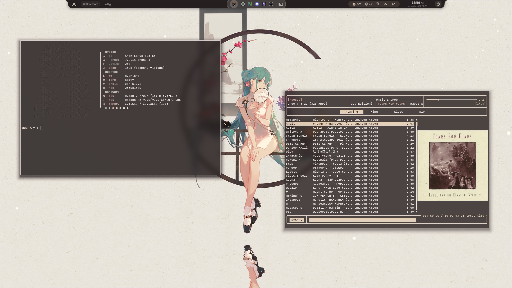
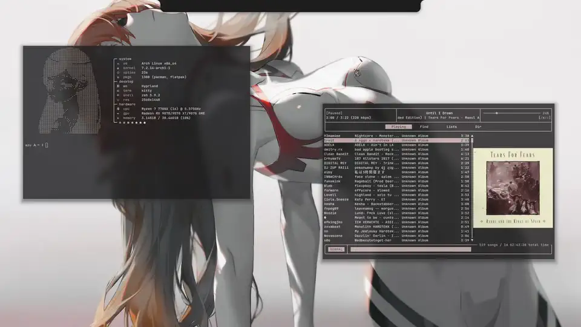
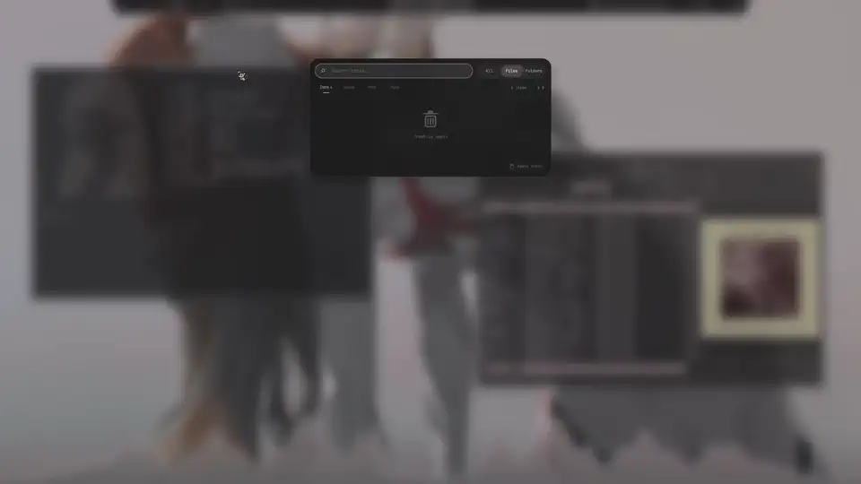
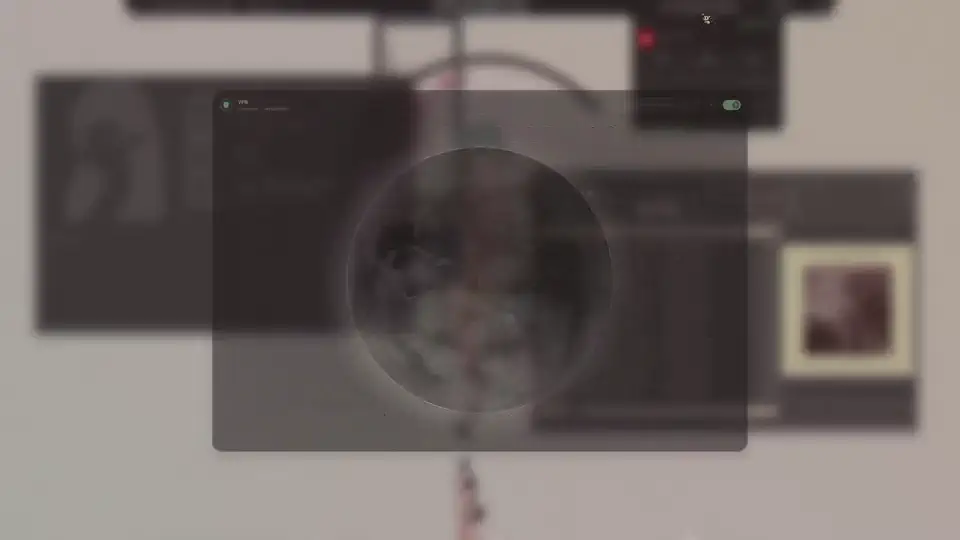
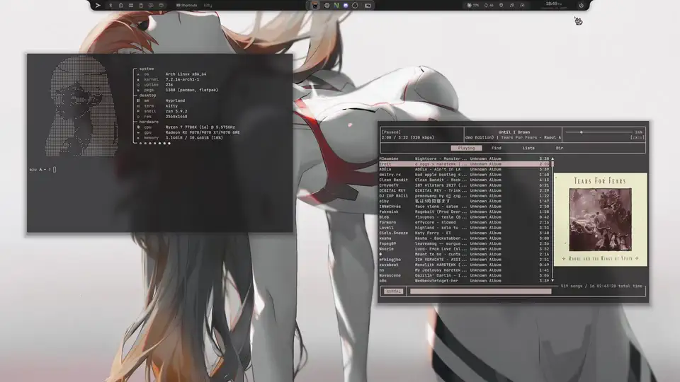
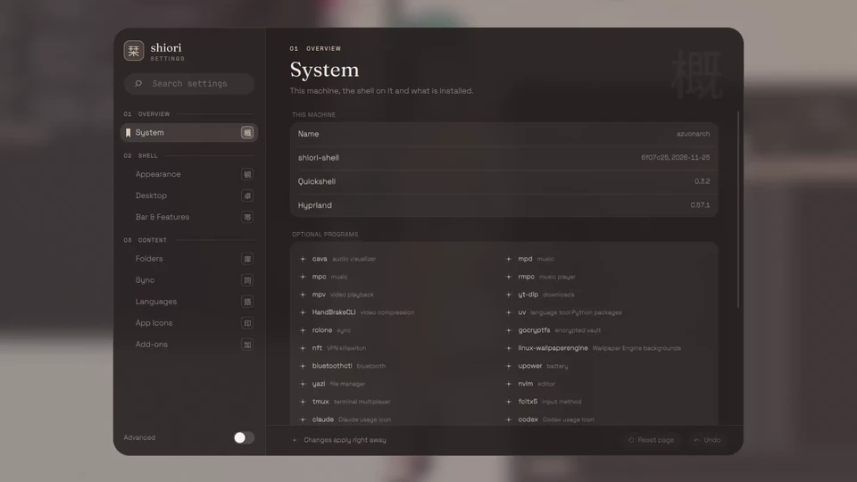
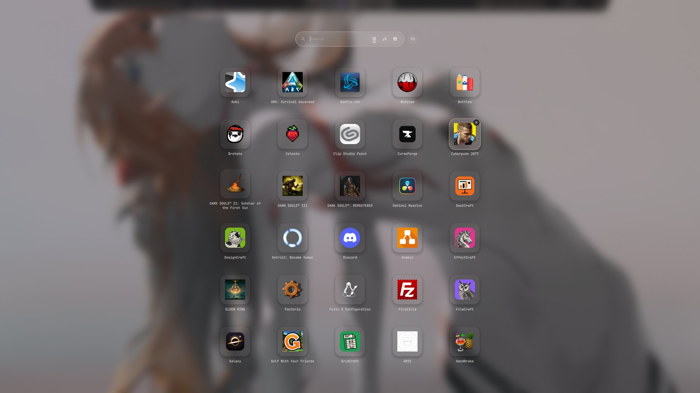

Every color comes from your wallpaper.
shiori-shell is a desktop shell and a set of dotfiles for Hyprland. Change the wallpaper, and the bar, terminals, editor and apps follow with a smooth fade.

See it in motion.
The video is on YouTube and loads when you press play.
One wallpaper, one palette, everywhere.
This page works the same way: its colors are taken from whatever screenshot is on screen. Scroll and watch them change.
The whole desktop fades to the new colors
Pick a wallpaper with Super + W, including animated ones and an online search on wallhaven.cc.
- Hyprland borders, Quickshell, kitty, Neovim, yazi, tmux, cava
- GTK and Qt apps, cursor, fcitx5
- Steam, Zen Browser, Vesktop, Obsidian, OBS and more, when installed

Learn a language from your own videos and books
Open it with Super + J.
- Subtitles that follow the speech and translate line by line
- A reader for your own books, with translation into English
- For Japanese: furigana, a dictionary and Aozora Bunko

Full screen and keyboard first
Every picker opens with one shortcut and closes with Escape.
- App launcher and task manager
- Clipboard history, trash, Wi-Fi, Bluetooth, music for MPD
- A VPN picker with a globe

Lock screen and power menu
Lock with Super + Ctrl + L, open the power menu with Super + P.
- Workspace overview on a right click
- Volume and brightness popups, notification toasts
- An audio visualizer on the desktop

Everything in one window
Open it with Super + , or the gear in the bar.
- Bar icons and features, folders, sync entries, your own app icons
- Audio visualizer and starry sky, on or off
- Every change is saved at once and can be undone

A complete desktop, not only a bar.
Bar
Workspaces, active window, clock with calendar, notifications, and dropdowns for audio, system stats, VPN, battery and sync.
Edit mode
Right-click the logo to hide or show icons. A hidden icon also turns its feature off.
Screenshot and video editor
Annotate screenshots, and trim, crop or compress videos with HandBrake.
Encrypted folders
gocryptfs folders that unlock with a password in the file browser and in yazi.
Dotfiles included
Hyprland with a Lua config, kitty, Neovim, tmux, yazi, MPD, rmpc, fastfetch and the starship prompt.
One installer
Installs the packages, links the configs and backs up what was there before.
A closer look.

Everything is one shortcut away.
The full list is in the README.
Three commands on Arch Linux.
The installer brings Hyprland and Quickshell with it. Configs that are already there are moved to a backup folder first.
$ git clone https://github.com/7azu/shiori-shell.git ~/shiori-shell $ cd ~/shiori-shell $ ./install.sh
Packages
Hyprland, Quickshell, pywal and the tools the shell uses, with a full system update.
Configs
Linked into ~/.config. Existing ones go to ~/.config-backup-shiori-<date>.
Log in again
Hyprland starts with the default wallpaper and takes the colors from it.
Requires Arch Linux. With your own setup: Hyprland 0.57.1 or newer and Quickshell 0.3.2 or newer.